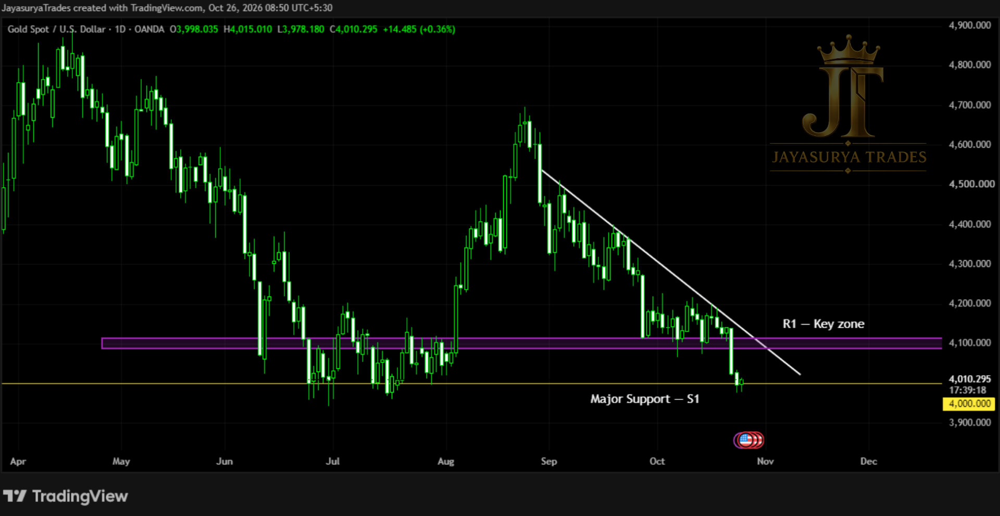

In our previous Monday Market Focus, we discussed the Head and Shoulders pattern that had formed on Gold and its downside breakout. At that time, I highlighted the possibility of price reaching the 4,000 level. The market has now fallen to that level and is still trading around it, bringing this major support area into focus.
In the previous analysis, I also discussed the descending trendline breakout as a potentially favorable area for considering buy-side averaging. However, price has fallen further since then. This is not the time to continue averaging into buy positions. The market is now around a major support level, and the next move needs to be confirmed before making another decision.
Current Key Level: 4,000 — major support S1.
Potential Range: Price could move sideways between S1 at 4,000 and the chart-marked resistance R1.
Bullish Confirmation: A break above the marked descending trendline with a candle close, followed by a retracement to R1.
Bearish Scenario: A confirmed break below 4,000 could bring bearish continuation into focus.
Current Approach: Avoid forcing buy or sell entries while price remains around this major support and the next direction is unconfirmed.

Current Market Structure — The 4,000 Support Test
The previous analysis identified the Head and Shoulders pattern and its downside breakout. The potential move toward 4,000 discussed in that analysis has now played out, with Gold reaching the level and remaining around it.
The 4,000 level is now the major support S1 being watched. At this stage, it is important not to assume that support will definitely hold or that it will definitely break. The market needs to show which direction it is prepared to take.
There is a possibility that price could move sideways between the 4,000 support and the marked R1 resistance. If that happens, taking positions prematurely on either side could mean entering while the market is still moving within this range.
Key Levels to Monitor
The main reference is 4,000, marked as S1. The chart-marked R1 resistance and the descending trendline are the other important references for assessing a possible bullish scenario.
R1 is shown as a marked level on the chart. No numerical price for R1 was provided in today's analysis notes, so this article does not assign a price to it.
Potential Scenarios & Confirmation Conditions
Scenario 1 — Sideways Movement Between S1 and R1
Gold could move sideways between the major support at 4,000 (S1) and the chart-marked resistance R1. This is one of the possibilities being watched while price remains around the 4,000 level.
While this sideways scenario remains possible, the preferred approach is to wait rather than force bullish or bearish entries. The market has not yet confirmed which direction it will take next.
Scenario 2 — Bullish Confirmation Above the Descending Trendline
For a potential bullish scenario, the market first needs to break above the descending trendline marked on the chart and produce a candle close above it. A retracement to the marked R1 level is then required as part of the confirmation condition described in this analysis.
If the trendline breakout and the R1 retracement condition develop, a potential bullish setup can then be assessed. Until those conditions appear, this remains a scenario to watch rather than a confirmed buy opportunity.
The recent decline also means that continuing to average into buy positions is not the approach being considered at this stage. Waiting for confirmation is more appropriate than adding to positions while the market's next direction remains unclear.
Scenario 3 — Bearish Continuation Below 4,000
If Gold breaks below the major support at 4,000 (S1), a bearish continuation scenario could come into focus. Such a breakdown could be followed by a significant downward move, but the direction should not be assumed before the level is broken and the move is assessed.
If this condition develops, the next step will be to assess the market structure and determine how a potential sell scenario should be approached. Further levels and entry conditions are not being assumed in advance.
Why Waiting Matters at This Level
Gold has reached the major support level identified in the previous analysis. That makes 4,000 an important decision point, but reaching a key level does not, by itself, confirm a reversal or a breakdown.
A move above the descending trendline followed by the specified R1 retracement could bring a bullish scenario into focus. A break below 4,000 could bring bearish continuation into focus. Meanwhile, sideways movement between S1 and R1 remains possible.
Because both directional scenarios remain conditional, this is not the time to decide in advance that Gold must move up or down. The priority is to wait for price to provide clearer evidence.
Key Takeaways
- The previously discussed Head and Shoulders downside breakout has been followed by a fall to the 4,000 level.
- Gold is currently trading around the major support marked as S1 at 4,000.
- Price could move sideways between S1 and the chart-marked resistance R1.
- This is not the time to continue averaging into buy positions after the further decline.
- A potential bullish scenario requires a break and candle close above the descending trendline, followed by a retracement at R1.
- A confirmed break below 4,000 could bring bearish continuation into focus.
- Until the market provides confirmation, avoid forcing either bullish or bearish entries.
The plan for Gold remains straightforward: monitor the major 4,000 support, watch how price behaves relative to R1, and wait for the required confirmation before assessing the next potential scenario.
Major support: 4,000 (S1).
Resistance: Chart-marked R1.
Potential bullish scenario: Descending trendline breakout with a candle close, followed by a retracement at R1.
Potential bearish scenario: A confirmed break below 4,000.
Alternative scenario: Sideways movement between S1 and R1.
Approach: Wait for confirmation before making a decision.
One day. One market. One focused analysis.
Levels. Structure. Scenarios. Confirmation.
No hype. Just how the market behaves.
Watch. Wait. Confirm.
Legal Disclaimer
All chart comments, structural patterns, volumes, and price action layouts discussed on this platform represent the personal opinions and historical chart observations of the creator at Jayasurya Trades. The content provided here is strictly for general informational and investor educational purposes only. It does not constitute, and must never be interpreted as, investment advice, stock recommendations, or direct buy/sell tips. The creator is NOT a SEBI-registered Research Analyst or Investment Advisor. Trading in securities and derivatives involves substantial market risk. Viewers are strongly urged to conduct their own independent technical research and consult a certified, SEBI-registered professional before deploying capital. Jayasurya Trades assumes no liability or financial responsibility for any personal trading outcomes, losses, or execution decisions made by the audience.